Data-Viz Solutions
Packages
ggplot
As a reminder, here is the link for all your geoms!
Histogram
Make a histogram of flipper length from the penguins data set! Set an appropriate binwidth. Hint: you can run names(data.set) in your console if you need a quick reminder on the variable names.
To do this, we are going to use geom_histogram(). Pull up the help file for geom_histogram() to find how to set a binwidth.
penguins |>
ggplot(
aes(x = flipper_length_mm)
) +
geom_histogram(binwidth = 4)Warning: Removed 2 rows containing non-finite outside the scale range
(`stat_bin()`).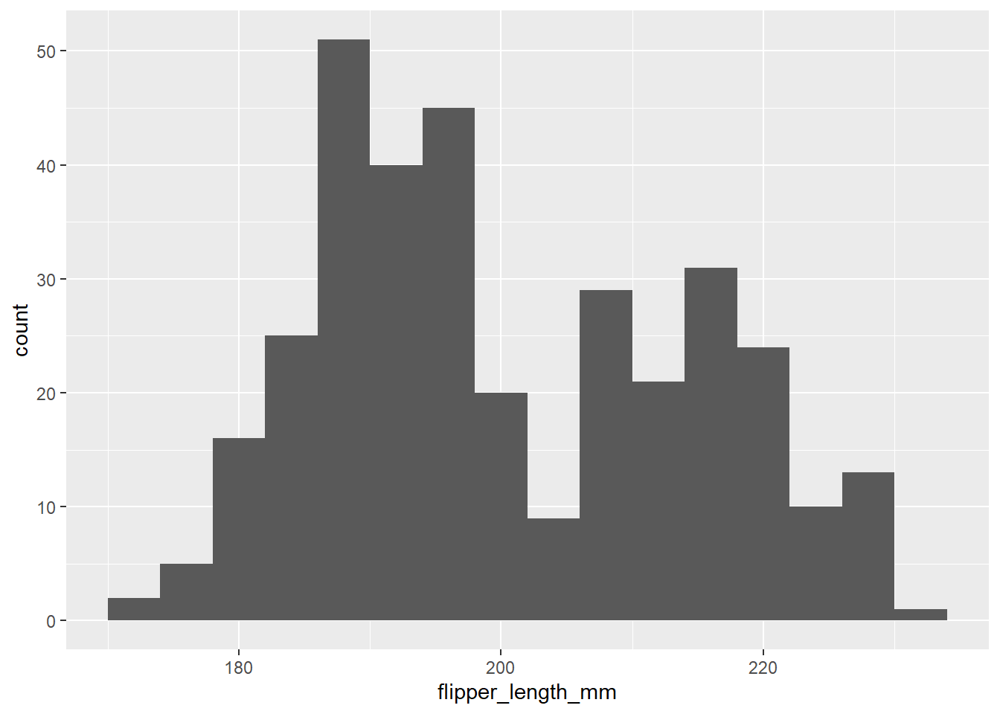
Scatterplot
We are going to create a scatterplot to look at the relationship between a penguin’s weight and flipper length! What geom can we use to make a scatter plot?
geom_point()
penguins |>
ggplot(
aes(x = body_mass_g, y = flipper_length_mm)
) +
geom_point()Warning: Removed 2 rows containing missing values or values outside the scale range
(`geom_point()`).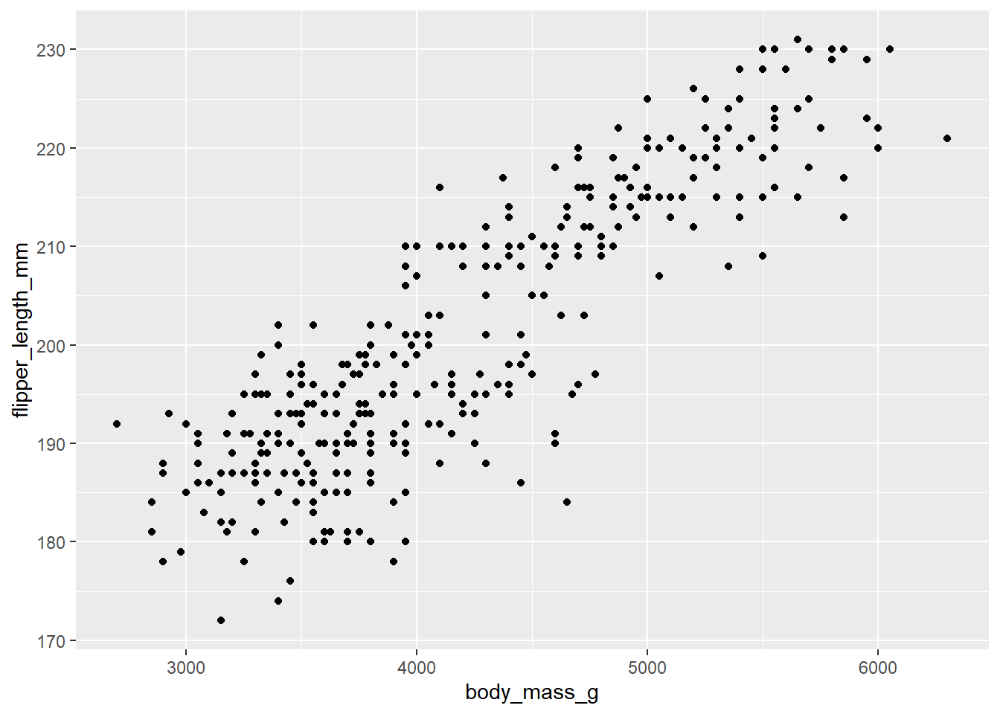
Note: aesthetic is a visual property of one of the objects in your plot. Aesthetic options are:
– shape - changes shape of geom
– color - changes outline (unless geom_point()) of geom
– size - changes size of geom
– fill - fills in geom with color (unless geom_point())
Let’s play around with these commonly used options and see what happens!
# example
penguins |>
ggplot(
aes(x = flipper_length_mm)
) +
geom_histogram(binwidth = 4 , fill = "blue" , color = "green", size = 3)Warning: Using `size` aesthetic for lines was deprecated in ggplot2 3.4.0.
ℹ Please use `linewidth` instead.Warning: Removed 2 rows containing non-finite outside the scale range
(`stat_bin()`).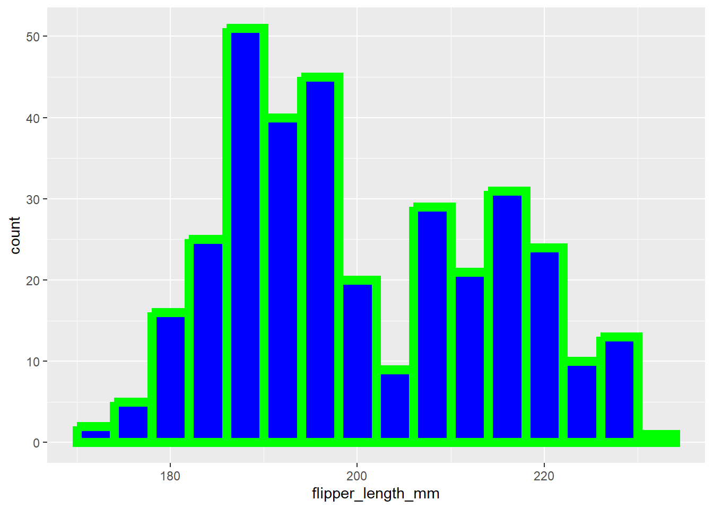
# trying to use size of a histogram changed the width of the line! The warning message says use linewidth to do soQuestion: What happens if we put color as an argument in our geom instead of our aes?
Anything outside of the aes() function is used to change our ggplot using non-data displays.
Labels
Good labels are critical for making your plots accessible to a wider audience. Always ensure the axis and legend labels display the full variable name.
labs() is the function. Common arguments to set are:
– x
– y
– title
– subtitle
– caption
Boxplot
Now, make a boxplot of weights of penguins. To do this, we are going to use geom_boxplot()
penguins |>
ggplot(
aes(x = body_mass_g)
) +
geom_boxplot()Warning: Removed 2 rows containing non-finite outside the scale range
(`stat_boxplot()`).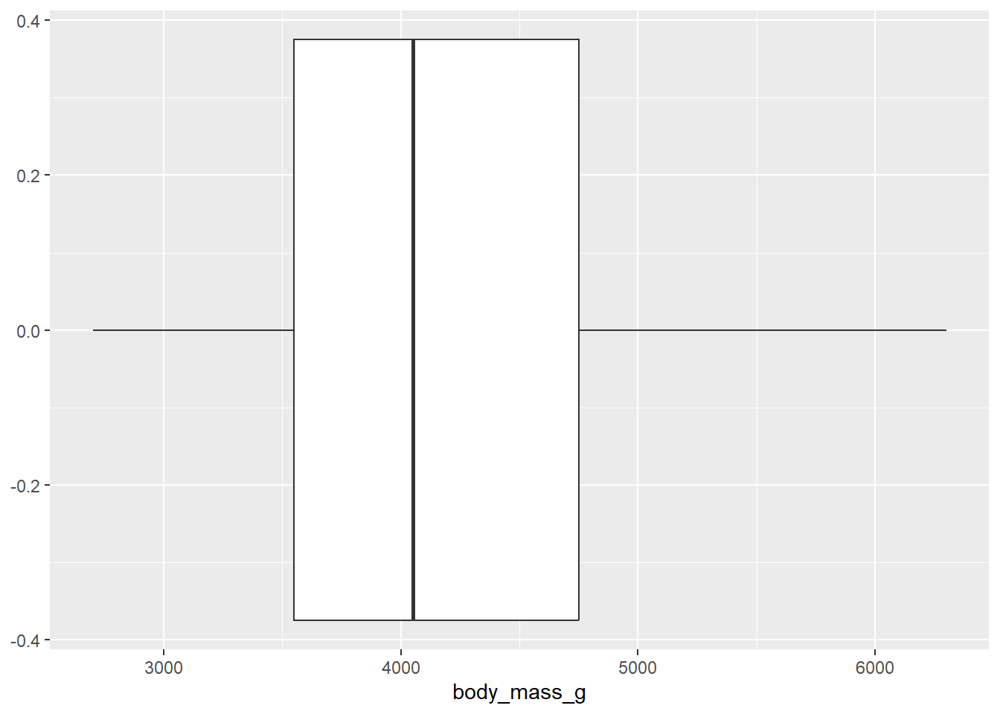
Let’s make boxplots of bill length for each of the three species below! Make sure to add appropriate labels to the plot.
penguins |>
ggplot(
aes(x = body_mass_g, y = species)
) +
geom_boxplot()Warning: Removed 2 rows containing non-finite outside the scale range
(`stat_boxplot()`).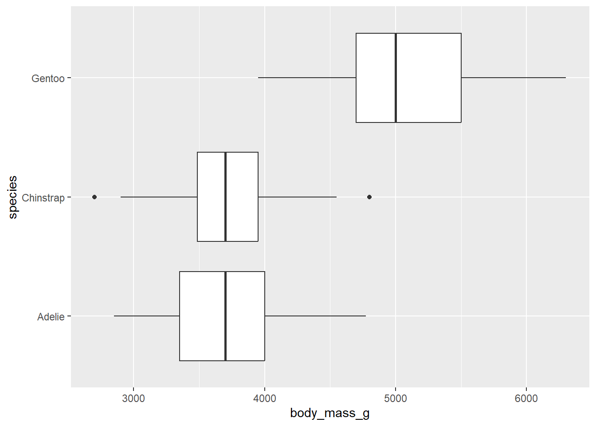
add a theme!
Add a theme to your boxplot!
https://ggplot2.tidyverse.org/reference/ggtheme.html
Why can / should we use themes?
Break apart a plot by a variable
What if we don’t want the overlap? We can use facet_wrap() to split the plot apart! This function takes the name of the variable you want to split by, and how many cols/rows you want your plots to show up in. Note: the syntax for this function is ~variable.name.
Run ?facet_wrap in your console to see the name of the row and column arguments within facet_wrap().
Add facet_wrap() as a layer on your ggplot below, breaking the plot apart by species.
penguins |>
ggplot(
aes(x = body_mass_g, fill = species)) +
geom_histogram(binwidth = 200, alpha = .5) +
facet_wrap(~species)Warning: Removed 2 rows containing non-finite outside the scale range
(`stat_bin()`).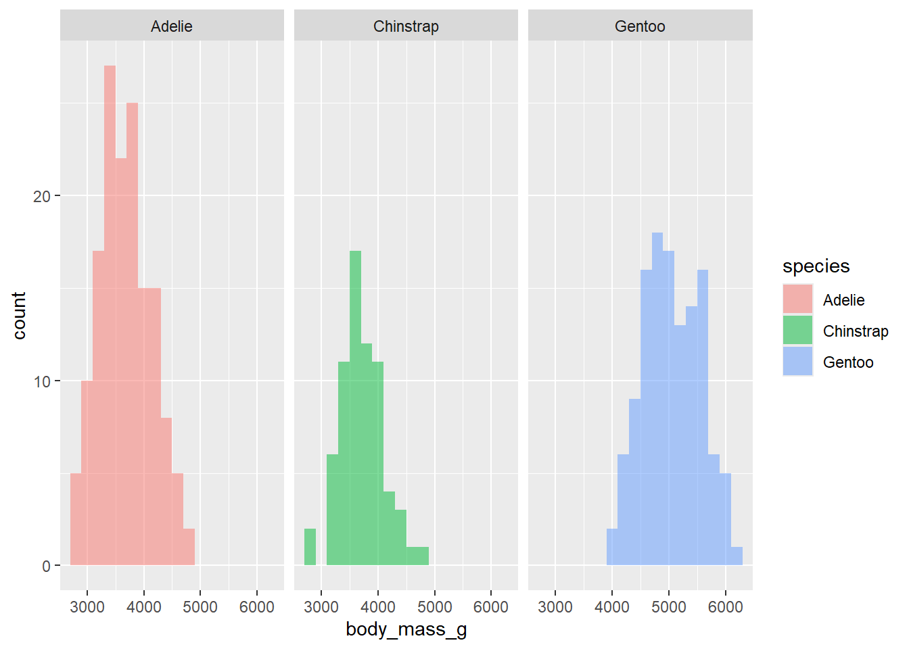
Break apart by more than one variable?
Now, lets make a scatter plot between bill length and bill depth. Color the points by species and shape the points by island.
penguins |>
ggplot(
aes(x = bill_length_mm, y = bill_depth_mm, color = species, shape = island)
) +
geom_point() +
facet_grid(species ~ island)Warning: Removed 2 rows containing missing values or values outside the scale range
(`geom_point()`).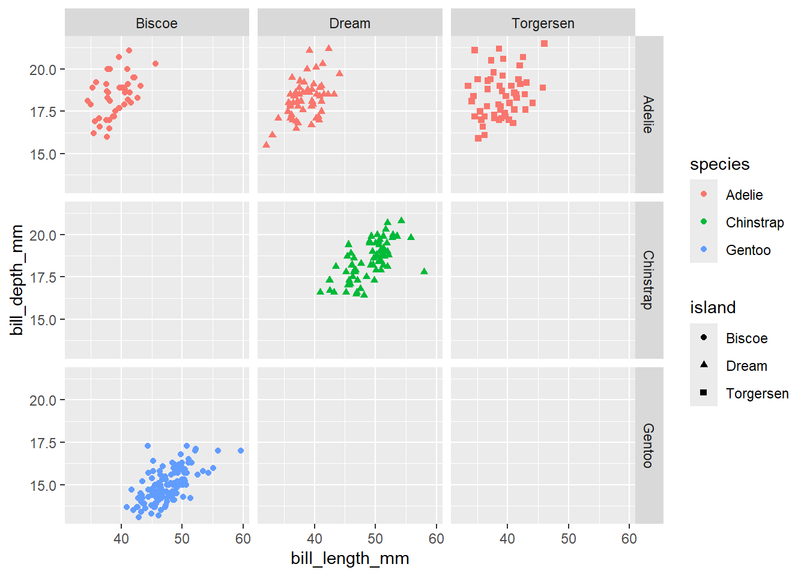
Here, we are going to introduce facet_grid(). It’s a lot like facet_wrap(), but allows us to break our plots apart by > 1 variable. The syntax for facet_grid() is variable1 ~ variable 2. Try breaking the plot above by both species AND island.
For more information on the difference, please reference the following stackoverflow link
Fill vs color
Change fill to color below and re-run the code. What happened?
penguins |>
ggplot(
aes(x = body_mass_g, fill = species )) +
geom_histogram(binwidth = 200, alpha = .7) +
facet_wrap(~species, nrow = 3)Warning: Removed 2 rows containing non-finite outside the scale range
(`stat_bin()`).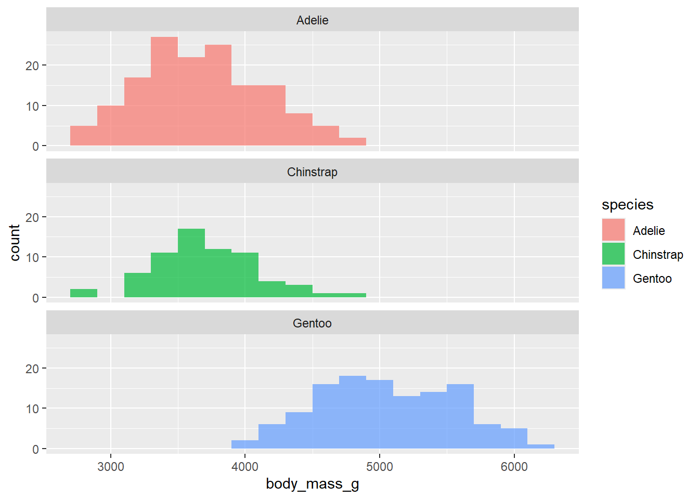
Generally, fill defines the color with which a geom is filled, whereas color defines the color with which a geom is outlined! However, there is one exception to the rule… points!
Most points plotted are considered too small to have meaningful area inside, so color and fill will work identical. Try it below!
penguins |>
ggplot(
aes(x = bill_length_mm, bill_depth_mm , color = species)
) +
geom_point()Warning: Removed 2 rows containing missing values or values outside the scale range
(`geom_point()`).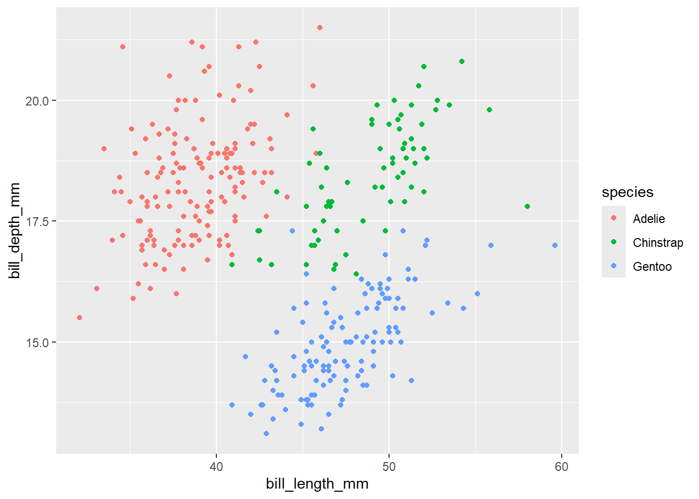
fill and color do act differently when the points have a “border”. Shapes 21-25 are shapes that have a border. Use the shape argument within the geom_point() function to change the shape, and see how it interacts with fill and color.
While you are playing around with shape, take a look at the geom_point() help file to see other arguments you can override. How about size?
Color
We can use pre-built or custom color paletts in R. Let’s talk first about useful pre-built paletts.
Viridis colour scales
The viridis scales provide colour maps that are perceptually uniform in both colour and black-and-white. They are also designed to be perceived by viewers with common forms of colour blindness. You can find the help file here
Before moving on, we need to understand:
- When to use _c vs _d
think about continuous vs discrete variables!
- When to use scale_color vs scale_fill
think about what aes() argument you used to change the color!
penguins |>
ggplot(
aes(x = bill_length_mm, bill_depth_mm , color = species)
) +
geom_point() +
scale_color_viridis_d()Warning: Removed 2 rows containing missing values or values outside the scale range
(`geom_point()`).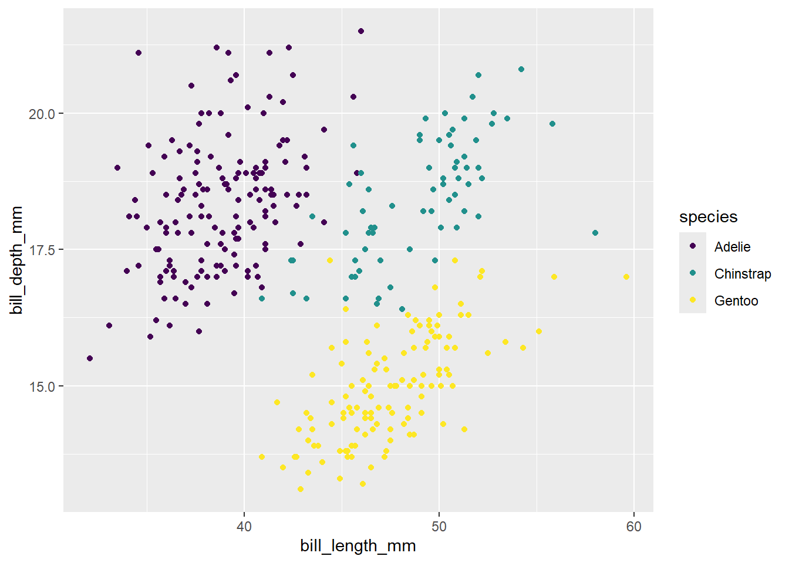
penguins |>
ggplot(
aes(x = bill_length_mm, bill_depth_mm , color = flipper_length_mm)
) +
geom_point() +
scale_color_viridis_c()Warning: Removed 2 rows containing missing values or values outside the scale range
(`geom_point()`).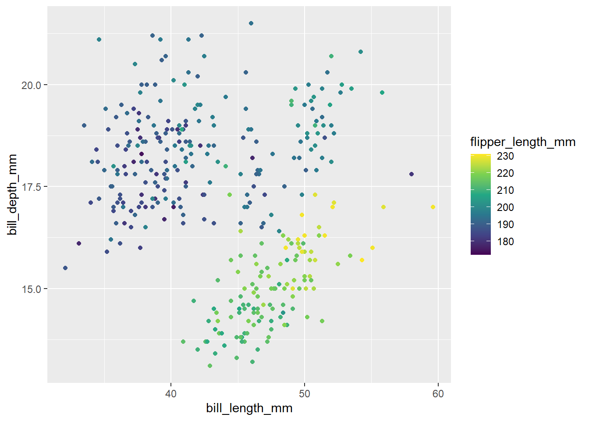
This is a great resource for more palettes! Link
Making your own
We can also make our own color pallet using scale_color_manual(). We can supply the values via HEX code. Here is a link to find the colors you are looking for: https://htmlcolorcodes.com/
You can also specify colors by their name. Let’s try this below.
penguins |>
ggplot(
aes(x = bill_length_mm, bill_depth_mm , color = species)
) +
geom_point() +
scale_color_manual(values=c("#999999", "red", "#56B4E9"))Warning: Removed 2 rows containing missing values or values outside the scale range
(`geom_point()`).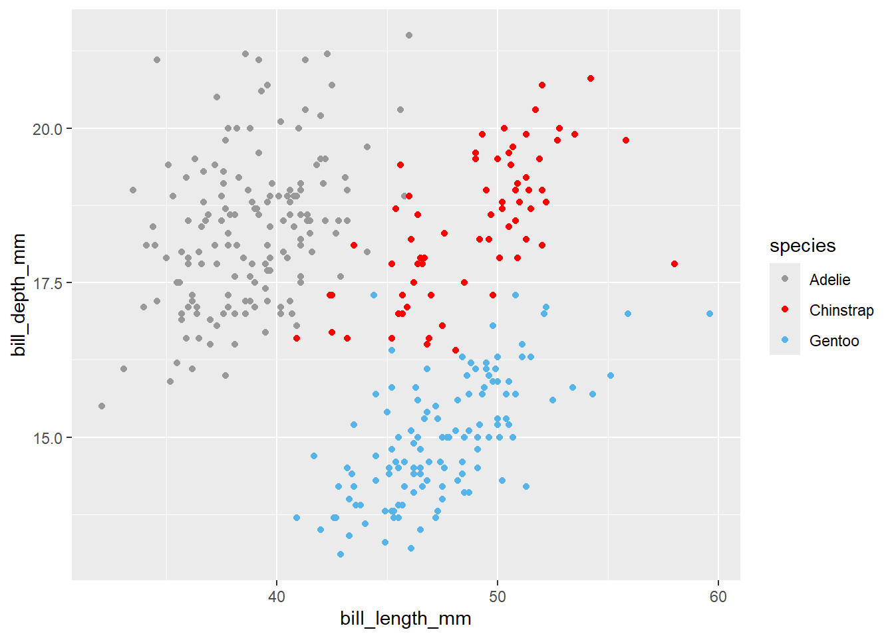
We can use scale_color_gradient() when working with a continuous variable! Let’s try it below.
penguins |>
ggplot(
aes(x = bill_length_mm, bill_depth_mm , color = flipper_length_mm)
) +
geom_point() +
scale_color_gradient(low="blue", high="red")Warning: Removed 2 rows containing missing values or values outside the scale range
(`geom_point()`).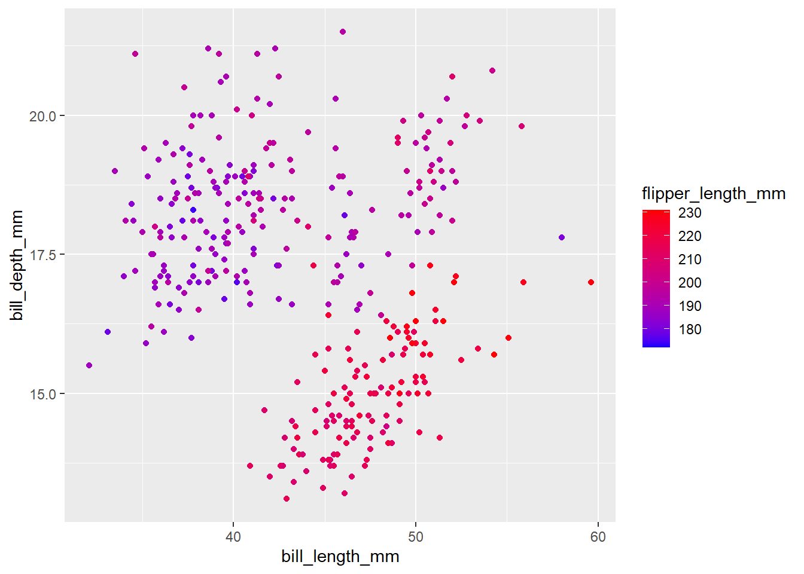